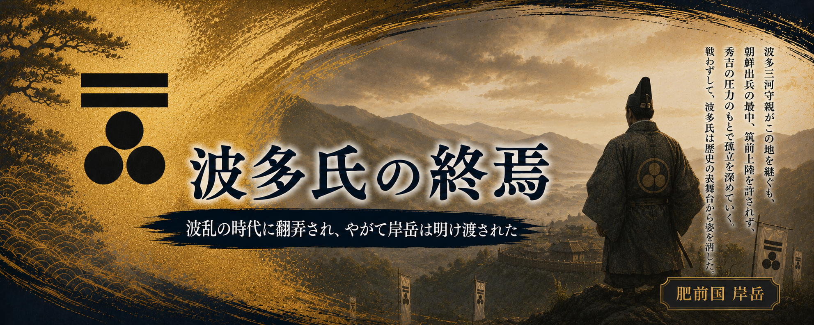

嵯峨天皇の流れをくむ松浦党の一族として始まった波多氏。
波多持を祖として以来、約４００年にわたり岸岳を拠点として勢力を築き、
松浦地方を代表する一族へと成長していきました。
戦国時代の終わり、その長い歴史を受け継いだ最後の当主 波多親。
親の時代は、単なる一族の争いではなく、
九州の勢力図が大きく変わり、
これまでの武士のあり方そのものが変化する時代でした。
長く続いた家を守るため、親はどのような選択をしたのか。
そして、なぜ波多氏は終焉を迎えることになったのか。
ここでは最後の当主・波多親の歩みを追っていきます。
波多氏最後の当主となった波多親。
幼名を藤童丸、初名を鎮といい、
のちに下野守、三河守を名乗りました。
しかし親が波多家を継ぐまでの道のりは、
決して平穏なものではありませんでした。
先代・波多盛には後継者となる男子がなく、
親は有馬氏から養子として迎えられ、
波多家の当主となります。
その背景には、先代の後室・真芳の意向があったとされます。
しかし新たな当主を迎えた波多家では、
それを受け入れない勢力もあり、
家中は次第に緊張を深めていきました。
やがて反対派による動きが起こり、
永禄7年（1564年）、
祝賀の挨拶を装って入城した者たちによって城内が混乱。
岸岳城は焼かれ、親は城を離れ、
草野氏を頼って落ち延びることになります。
若くして家督を継いだ親にとって、 最初の大きな試練は、外敵との戦いではなく、 自らの家中をまとめることでした。
その後、親は龍造寺氏・有馬氏の後援を得て、
永禄12年（1569年）に岸岳城を奪回します。
しかし、この出来事は親にとって、
周囲の大名との関係が波多家の存続を左右することを
強く意識するきっかけとなりました。
・『岸岳城跡Ⅰ』
波多氏の系譜、岸岳を中心とした支配、波多氏家臣団・地域支配について。
・『肥前松浦一族』（外山幹夫）
波多氏の成立から戦国期の動向、波多親の時代背景について。
・『松浦家世伝』
松浦氏・波多氏に関する系譜・伝承資料。
・提供資料「波多親」整理表
波多親の家督相続、有馬氏からの養子、永禄7年（1564）の岸岳城の事件、
永禄12年（1569）の復帰について。
※家督相続や家中騒動については、伝承・系図資料による部分も含まれます。
史料の成立時期や評価を踏まえ、
本章では広く伝えられている流れとして紹介しています。
永禄12年（1569年）、波多親は龍造寺氏・有馬氏の後援を得て、
失った岸岳城を取り戻します。
しかし、その後の肥前では龍造寺隆信の勢力拡大が進み、
松浦地方を含む北部九州の情勢は大きく変化していきました。
天正元年（1573年）、
龍造寺隆信は松浦地方とも関わりの深い草野氏の拠点、
鬼ヶ城を攻めます。
この戦いは平原合戦と呼ばれ、
草野鎮永は敗走しますが、その後和睦によって帰還したと伝えられています。
波多親が一度身を寄せた草野氏もまた、
龍造寺氏の勢力拡大の中で対応を迫られることになりました。
その後、龍造寺隆信は肥前を中心に勢力を広げ、 有馬氏との対立を深めていきます。
天正12年（1584年）、
龍造寺隆信は有馬鎮貴を攻めるため島原へ出陣します。
この時、龍造寺軍は大軍であったとされ、
一方の有馬氏は島津氏の援軍を得て迎え撃ちました。
沖田畷の戦いでは、
龍造寺軍は敗北し、隆信も戦死します。
この戦いは、九州北部の勢力図を大きく変える転機となりました。
龍造寺隆信の死によって、
これまで強い影響力を持っていた龍造寺勢力は揺らぎ、
九州は次の時代へ向かって動き始めます。
そしてやがて、秀吉による九州平定の時代へ入っていくことになります。
・提供資料「波多親」整理表
永禄12年（1569年）の岸岳城奪回、龍造寺氏・有馬氏との関係について。
・提供資料「岸岳関連資料」
戦国期の波多氏と周辺勢力の関係について。
・『佐賀市史』上巻
天正12年（1584年）、龍造寺隆信が有馬鎮貴を攻め、
島津家久の援軍と沖田畷で戦い戦死した経緯。
・『歴代鎮西志』
龍造寺隆信の島原出陣、沖田畷の戦いについて。
※鬼ヶ城・平原合戦については、地域史・伝承資料による整理部分を含みます。
天正12年（1584年）、
沖田畷の戦いで龍造寺隆信が戦死すると、
九州北部の勢力関係は大きく変化しました。
そしてその翌年、豊臣秀吉は全国統一へ向け、
九州へ大きな軍勢を進めることになります。
天正15年（1587年）、
秀吉による九州征伐が始まると、
九州の諸大名や国人たちは、
新たな支配者である秀吉への対応を迫られました。
長く松浦の地を守ってきた波多氏も、
これまでの戦国の関係だけでは生き残れない時代へ
入っていきます。
波多親は、この時代の大きな変化の中で、
難しい判断を迫られることになります。
龍造寺氏との関係、
有馬氏とのつながり、
そして代々守ってきた岸岳の領地。
これまで波多氏が築いてきた立場を、
新しい天下の仕組みの中でどう残すのか。
親にとって大きな転機でした。
しかし、秀吉の九州平定に対する対応は遅れ、
親は秀吉から厳しい処置を受けることになります。
ただし、この時すぐに波多家が滅びたわけではありません。
鍋島直茂の取り成しによって一度は許され、
その後も波多氏は領主として存続しました。
しかし、戦国の世で自らの判断と武力によって
岸岳を守ってきた波多氏にとって、
天下統一を進める秀吉の時代は、
これまでとは全く異なる時代でした。
波多親は、最後の当主として、
古くから続いた松浦の武士団と、
新しい天下の力との間で揺れることになります。
・提供資料「波多親」整理表
天正15年（1587年）、秀吉九州征伐での遅参、
鍋島直茂の取り成しについて。
・提供資料「岸岳関連資料」
波多氏と戦国期の松浦地方の情勢について。
・『佐賀市史』関連資料
豊臣秀吉の九州平定、九州諸勢力の対応について。
※波多親の心情については、 当時の政治状況から考えられる立場として表現しています。
天正15年（1587年）、
秀吉の九州平定の際、波多親は対応が遅れ、
厳しい処置を受けることになります。
しかし、親はそこで終わることなく、
自らの立場を取り戻すため上方へ赴き、
秀吉との関係を築こうとしました。
この時、親は秀吉に茶器を披露し、
その器を評価されたとも伝えられています。
また官途として「三河守」を称することを許され、
一度は豊臣政権の中で認められる存在となりました。
秀吉にとっても、長く松浦地方を支配してきた波多氏を
完全に排除するより、
九州北西部を知る在地勢力として取り込む意味があったと考えられます。
特に名護屋の地は、
後の朝鮮出兵において重要な拠点となります。
そして、文禄2年（1593年）
波多親は朝鮮半島の熊川（こもがい）に駐留します。
しかし、この戦いの中で親の行動が問題視されます。
単独で行動したことが、軍令に背くものと判断され、
豊臣政権から処分を受けることになります。
文禄2年（1593年）、 波多親は改易となり、 岸岳を中心に続いてきた波多氏の歴史は終わりを迎えます。
帰国の際も松浦へ戻ることは許されず、
親は常陸へ送られることになります。
ここに、４００年続いた波多氏の歴史も終焉を迎えるのです。
・提供資料「波多親」整理表
文禄元年（1592年）朝鮮出兵、
文禄2年（1593年）熊川駐留、改易について。
・提供資料「名護屋関連資料」
名護屋周辺と波多氏、朝鮮出兵時の地域状況について。
・『岸岳城跡Ⅰ』
波多氏の歴史、岸岳を中心とした支配について。
※熊川での行動や改易理由については、 伝承・整理資料を含むため、諸説があります。
文禄2年（1593年）波多親は改易となり、岸岳を中心に続いてきた波多氏の歴史は終わりを迎えました。
しかし、波多親が去った後も、波多氏の記憶がこの地から消えることはありませんでした。
かつて波多氏が治めた土地には、「岸岳末孫」と呼ばれる伝承が残されています。
そこに語られているのは、恐ろしい祟りの話ではなく、
時代に翻弄された波多親、そして共に歩んだ家臣や領民たちの記憶なのではないでしょうか。
波多親は、最初こそ秀吉という大きな時代の流れを読み違えました。
しかし、その後は一度失った立場を取り戻すために動き、
豊臣の時代の中で波多家を残そうと努力しました。
その過程では、家臣や領民にも大きな負担をかけました。
それでも最後まで家を守ろうとした一人の戦国武将だったのだと思います。
その親を支えた家臣たちも、簡単に主家の終わりを受け入れることはできなかったのでしょう。
その思いが、後の時代に伝承として残されていきました。
その話の一つが、「甲城と岸岳の馬洗い」の伝承です。
この話は『北波多村史 下巻』第八章「民話伝承」に記されています。
ただし、「馬洗い」の話は、歴史上の出来事として確認されたものではありません。
同じような話は古くから軍記物にも見られ、
その原型は中国の兵法に由来する話や、
室町時代に成立した軍記物語『太平記』に登場する赤松氏の
「白米で馬を洗う」逸話にあるとされています。
敵に対して、まだ十分な力が残っているように見せるための策略として語られてきた話です。
岸岳の「馬洗い」も、そうした伝承が時代を越えて伝わる中で、
この土地の記憶と結びついたものだと考えられます。
しかし、私はこの話が残ったことにこそ意味があると思います。
小国の家臣団が、天下を手にした豊臣政権に対抗できるはずはありません。
それでも最後まで主家を思った家臣たち。
そして長く波多氏と共に生きた人々の中には、
簡単には消えない悔しさや誇りが残ったのではないでしょうか。
「岸岳末孫」という言葉を聞くと、
祟りや怪談のような怖い話を思い浮かべる人もいるかもしれません。
しかし、私がこの言葉から感じるのは恐ろしさではありません。
そこに残されているのは、波多親を支えた家臣たち、
そしてこの土地で生きた人々が抱いた、
故郷と主家への思いなのだと思います。
歴史とは、ただ記録に残された出来事だけではありません。
時代の中で生きた人々の思いや、語り継がれてきた記憶もまた、
歴史の一部なのではないでしょうか。
消えてしまいそうな小さな記憶。
しかし、そこには確かに誰かが生きた証があります。
それは、長い年月を越えて残された「時の欠片」なのだと私は感じています。
ここまで読んでいただき、本当にありがとうございました。
管理人 しゅう
・『北波多村史 下巻』
第八章「民話伝承」
「甲城と岸岳の馬洗い」伝承。
・『太平記』
赤松氏「白米で馬を洗う」逸話。
馬洗い伝承の類型として参照。
・地域伝承・郷土資料
岸岳末孫、波多氏に関する伝承整理。